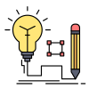

<nz-layout class="app-layout">
  <nz-sider class="menu-sidebar"
            nzCollapsible
            nzWidth="256px"
            nzBreakpoint="md"
            [(nzCollapsed)]="isCollapsed"
            [nzTrigger]="null">
    <div class="sidebar-logo">
      <a href="https://ng.ant.design/" target="_blank">
        
        <h1>Trung Hiếu</h1>
      </a>
    </div>
    <ul nz-menu nzTheme="dark" nzMode="inline" [nzInlineCollapsed]="isCollapsed">
      <li id="test" nz-submenu nzOpen nzTitle="Hệ Thống" nzIcon="radius-setting">
        <ul>
          <li nz-menu-item nzMatchRouter>
            <a routerLink="hethong/chinhanh">Quản lý chi nhánh</a>
          </li>
          <li nz-menu-item nzMatchRouter>
            <a routerLink="hethong/quyen">Quản lý quyền</a>
          </li>
          <li nz-menu-item nzMatchRouter>
          <a routerLink="hethong/taikhoan">Quản lý tài khoản</a>
          </li>
        </ul>
      </li>
      <li nz-submenu nzOpen nzTitle="Danh Mục" nzIcon="menu">
        <ul>
          <li nz-menu-item nzMatchRouter>
            <a routerLink="danhmuc/khachhang">Quản lý khách hàng</a>
          </li>
        </ul>
      </li>
      <li nz-submenu nzOpen nzTitle="Hóa Đơn" nzIcon="book">
        <ul>
          <li nz-menu-item nzMatchRouter>
            <a routerLink="invoice/invoiceGTKT">Quản lý hóa đơn 01GTKT</a>
          </li>
        </ul>
      </li>
    </ul>
  </nz-sider>
  <nz-layout>
    <nz-header>
      <div class="app-header">
        <span class="header-trigger" (click)="isCollapsed = !isCollapsed">
            <i class="trigger"
               nz-icon
               [nzType]="isCollapsed ? 'menu-unfold' : 'menu-fold'"
            ></i>
        </span>
      </div>
    </nz-header>
    <nz-content>
      <div class="inner-content">
        <router-outlet></router-outlet>
      </div>
    </nz-content>
  </nz-layout>
</nz-layout>
<!-- <nz-layout>
  <nz-header style="background-color: cornflowerblue;">
    <div class="logo-home">
      <a href="#">
        
        <h1>Trung Hiếu</h1>
      </a>
    </div>
    <ul style="background-color: cornflowerblue;" nz-menu nzTheme="dark" nzMode="horizontal">
      <div style="">
        <li nz-menu-item>nav 1</li>
        <li nz-menu-item>nav 2</li>
        <li nz-menu-item>nav 3</li>
      </div>
    </ul>
  </nz-header>
  <nz-content>
    <nz-breadcrumb>
      <nz-breadcrumb-item>Home</nz-breadcrumb-item>
      <nz-breadcrumb-item>List</nz-breadcrumb-item>
      <nz-breadcrumb-item>App</nz-breadcrumb-item>
    </nz-breadcrumb>
    <div class="inner-content">Content</div>
  </nz-content>
  <nz-footer>Ant Design ©2020 Implement By Angular</nz-footer>
</nz-layout> -->
